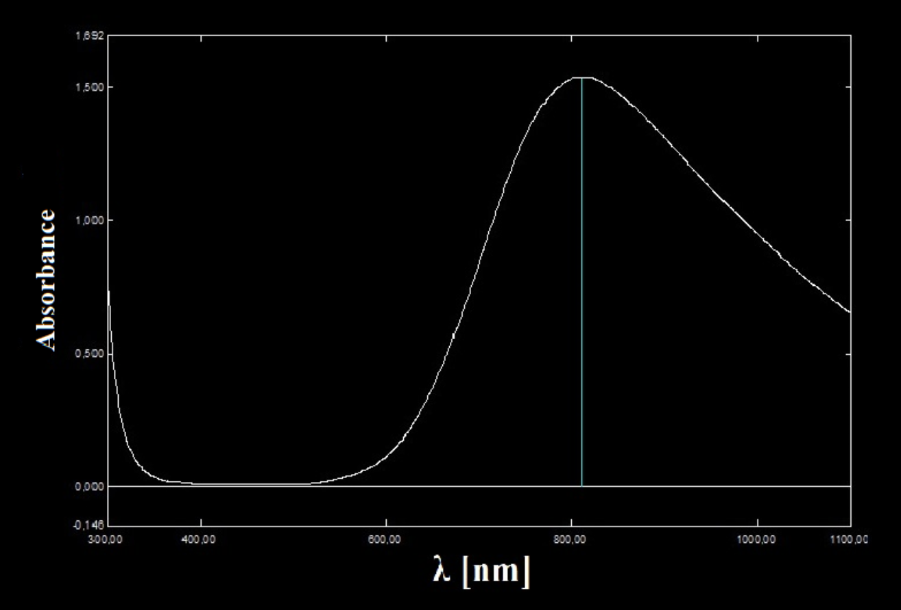

Very often, we see colored chemical compounds. But why are they colored? What is the difference between blue copper (ii) sulfate and orange iron (iii) chloride? What actually does being blue mean?
Light is an electromagnetic wave being characterized by the usual physical quantities characterizing waves. One of these quantities is the wavelength. Wavelengths of visible light range from violet 380 nanometers to red 700 nanometers.
The fact that copper (ii) sulfate is blue means that it emits only blue light. That is equivalent to saying it absorbs every other wavelength except for the blue one. However, this amount of absorption can be quantitatively used in a process known as spectrophotometry.
A spectrophotometer is a machine consisting of the following important parts:
he spectrophotometer shows a quantity know as absorbance and defined by \(A = \text{log} \frac{I_0}{I}\)
Different compounds absorb different amounts of light at different wavelengths, so the wavelength at which the spectrophotometry is conducted is very important.
The absorbance depends on a number of factors:
Every compound absorbs differently at varying wavelengths so a formula for absorbance can’t explicitly reference wavelength. However, we know that absorbance grows linearly with concentration and with the path length so we can write the following formula known as the Beer-Lambert Law: \(A=εcl\) , where is a coefficient known as molar absorptivity. For any given compound, at any given wavelength, we have a different empirically (experimentally) determined molar absorptivity.
High values of means high absorption. For example, blue copper (ii) sulfate will have a high absorptivity in red wavelengths, but a low one in blue wavelengths
The picture above depicts the absorbance spectrum of copper sulfate
For copper (ii) sulfate you can see that it has the highest absorbance at high red wavelengths while the absorbance at low blue wavelengths is very low.
Every color we see is a mixture of different wavelengths emitted in different amounts, every spectrum like the one above generating a unique color, a fingerprint of the chemical species.
Written by Alex Jicu